功与动能定理
一 知识与公式
1．恒力做功
W=Fscosθ θ是力与位移的夹角。求某一个恒力的功时使用；不能把力与速度的夹角、斜面倾角直接代入。
2．动能与动能定理
Ek=21mv2；W合=21mv22−21mv12 把同一物体在所选过程内各力做的功按正负相加，求初末速度或未知力的功。
3．重力与滑动摩擦力做功
WG=mg(h1−h2)；Wf=−fs；f=μN 重力功只取决于高度差。摩擦力大小不变、方向始终与物体相对地面的位移反向时，才可用Wf=−fs。无额外法向分力时，水平面上N=mg，固定斜面上N=mgcosα；有斜拉力时应重新求N。
4．功率与图像
P=Fvcosθ；W=FΔx 恒力的一段图像可按矩形面积求功；分段的F与x图像把各段有符号面积相加。W与x图像的斜率为对应力的沿程分量；Ek与x图像的斜率为合力的沿程分量。
5．摩擦生热与弹性势能
Q=fΔs相对；W弹=−ΔEp 滑块与木板都运动时，先分别找两者对地位移，再用相对滑动路程求热量。弹簧弹力做功可由动能定理反求。
6．曲线与多过程问题
N−mg=Rmv2（圆弧最低点） 先用圆周运动关系求该点速度，再对整段过程列动能定理。分段运动先标出受力变化位置，必要时分别求每段末速度。
二 例题
例1 两个互相垂直的恒力F1、F2作用在同一物体上。物体发生一段位移时，两个力分别做功4J、3J。两力的合力做功为（ ）。
- A．1J
- B．3.5J
- C．5J
- D．7J
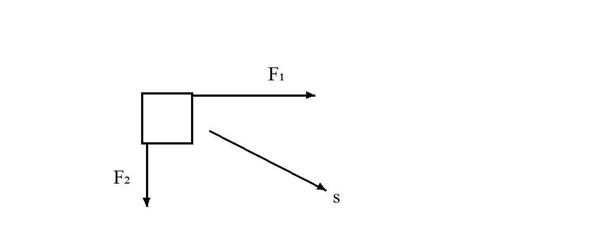
参考解答
功是标量，按代数和相加。W合=W1+W2=4+3=7J，选D。
不能把两个功当作垂直矢量，用勾股定理得到5J。
例2 某物体由静止自由下落，其动能Ek与下落位移h的关系如图。图线斜率表示该物体的（ ）。
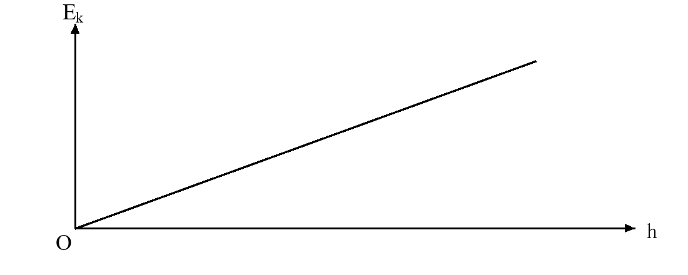
参考解答
由mgh=Ek得Ek=mgh，斜率为mg，即重力大小，选C。
斜率单位为J/m=N，也可据单位排除质量和重力加速度。
例3 汽车在平直公路上以恒定功率减速行驶，所受阻力大小保持不变。减速过程中牵引力F和加速度大小a的变化为（ ）。
- A．F减小，a减小
- B．F增大，a减小
- C．F减小，a增大
- D．F增大，a增大
参考解答
由P=Fv知速度减小时牵引力增大。减速期间阻力f>F，a=(f−F)/m逐渐减小，选B。
这里说的是加速度大小；若沿运动方向取正，加速度为负，数值逐渐接近零。
例4 物块从粗糙固定斜面顶端由静止下滑到坡底。设下降高度为h，末速度为v，质量为m，克服摩擦力做功为Wf+。
- （1）分别写出重力做功、摩擦力做功和合力做功。
- （2）用动能定理说明重力做功与动能增加量之间的关系。
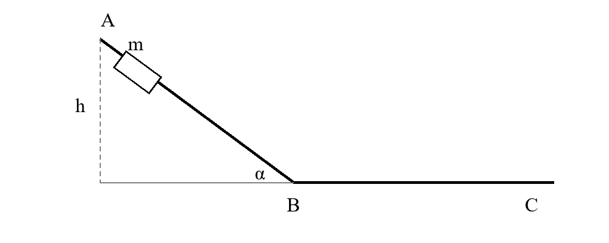
参考解答
WG=mgh，摩擦力做功−Wf+，支持力不做功，故W合=mgh−Wf+。
mgh−Wf+=21mv2。因此重力做功等于动能增加量与克服摩擦力做功之和；有摩擦时，不能把重力功直接等同于动能增量。
例5 质量为2kg的物体沿直线运动，初速度为3m/s。沿该方向的合外力F随位移x变化的图像如图。
- （1）求前8m内合外力做的总功及x=8m处的速度大小。
- （2）在前8m内，物体在哪个位置速度最大？求最大速度。
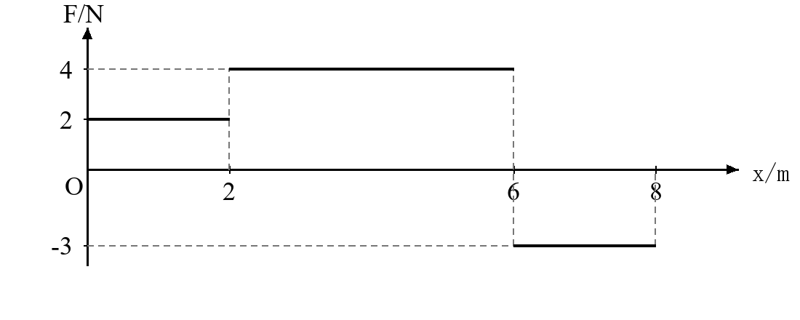
参考解答
W=2×2+4×4−3×2=14J。初动能9J，末动能23J，故v8=23m/s。
前6m合力做正功，此后做负功；最大动能在x=6m处，为9+4+16=29J，故vmax=29m/s。
例6 如图，物体在距斜面底端5m处由静止下滑，经过平滑连接处后进入水平面。斜面倾角37∘，物体与斜面及水平面间的动摩擦因数均为0.4。取g=10m/s2，sin37∘=0.6，cos37∘=0.8。
- （1）求物体到达斜面底端时的速度。
- （2）求物体在水平面上滑行的距离。
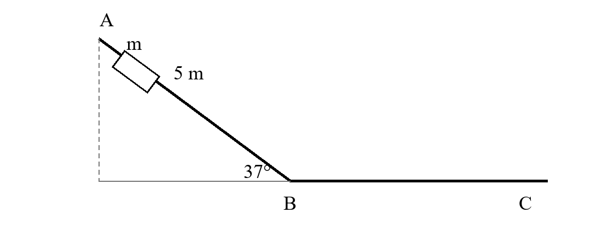
参考解答
斜面段有mg⋅5⋅0.6−0.4mg⋅0.8⋅5=21mvB2，故vB2=28m2/s2，vB=27m/s。
水平段有−0.4mgs=0−21mvB2，解得s=3.5m。
也可把两段合并列式，但斜面支持力是mgcos37∘，水平面支持力是mg，两段摩擦力大小不同。
例7 运动员将质量为m的足球从水平地面由静止踢出。足球到达最高点时，高度为h，速度大小为v。忽略空气阻力，重力加速度为g，踢球过程中重力做功可忽略。
- （1）求运动员对足球做的功。
- （2）求足球离脚瞬间的速度大小，并说明最高点动能是否为零。
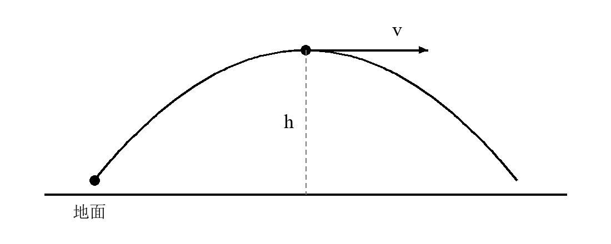
参考解答
从踢球前静止到最高点，W人−mgh=21mv2，故W人=mgh+21mv2。
离脚后只有重力做功，21mv02=mgh+21mv2，所以v0=v2+2gh。最高点仍有水平速度v，动能为21mv2。
例8 质量为m的物体以初速度v0沿粗糙水平面向右运动，出发点距轻弹簧左端为s。弹簧右端固定，物体把弹簧压缩x后首次速度为零。动摩擦因数为μ，重力加速度为g。
- （1）求从出发到弹簧最短的过程中摩擦力做的功。
- （2）求压缩弹簧过程中弹力对物体做的功，以及物体克服弹力做的功。
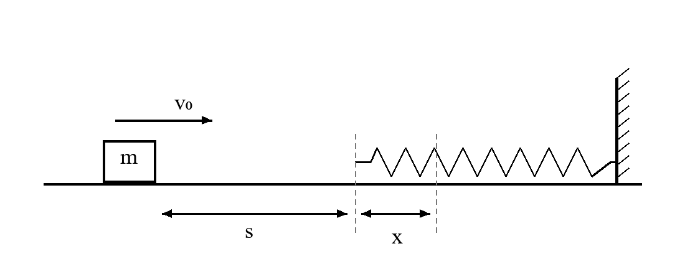
参考解答
摩擦作用路程为s+x，故Wf=−μmg(s+x)。
W弹−μmg(s+x)=0−21mv02，所以W弹=μmg(s+x)−21mv02。
克服弹力做功为21mv02−μmg(s+x)。注意求“弹力做功”与“克服弹力做功”时正负号不同。
例9 竖直固定的半圆形碗状轨道半径为R。质量为m的小物体从左侧边缘P由静止滑下，到最低点Q时对轨道的压力为2mg。物体可视为质点。
- （1）求物体在最低点的速度大小。
- （2）求从边缘到最低点过程中，物体克服摩擦力做的功。
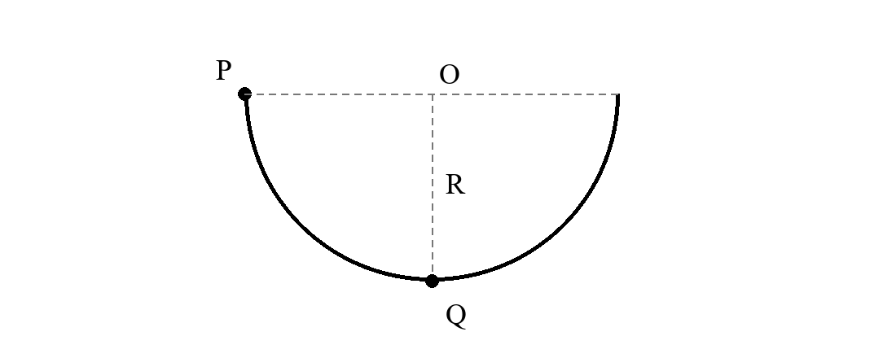
参考解答
由牛顿第三定律，最低点支持力N=2mg。N−mg=mvQ2/R，得vQ=gR。
从P到Q，mgR−Wf+=21mvQ2，得Wf+=21mgR。
不能把最低点的支持力与重力视为平衡力，物体此时有向上的向心加速度。
例10 从地面竖直向上抛出一物体。除重力外，物体还受到大小恒定、方向始终与运动方向相反的阻力。上升和下降过程中，动能Ek随离地高度h变化的部分图像如图。取g=10m/s2。
- （1）求物体的质量及阻力大小。
- （2）求抛出瞬间的速度和能达到的最大高度。
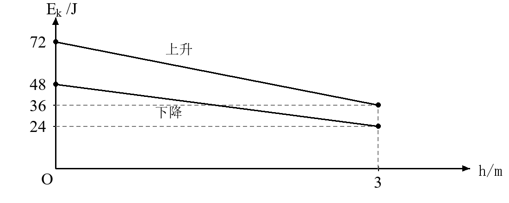
参考解答
上升图线斜率为−12J/m，故mg+f=12N。下降图线按高度从小到大读，斜率为−8J/m，故mg−f=8N。
联立得m=1kg，f=2N。由21mv02=72J得v0=12m/s。
到最高点动能为零，72=(mg+f)H，得H=6m。下降时从高处向低处运动，动能增加；不要把图线斜率与时间变化率混同。
例11 如图，质量为M、长度为L的木板放在光滑水平面上。质量为m的小物块位于木板最左端，两者初始均静止。物块受到水平向右的恒力F，滑动摩擦力大小为f。当小物块到达木板最右端时，木板向右移动了x。
- （1）分别求小物块和木板相对地面的位移。
- （2）分别求小物块与木板的动能。
- （3）求此过程产生的热量，并核对外力做功与能量变化。
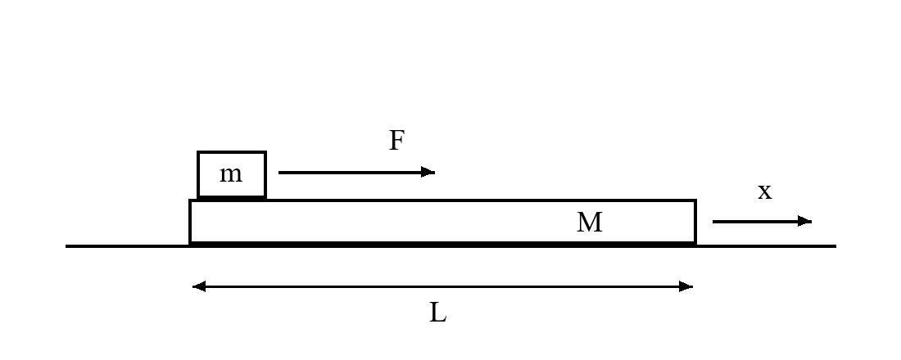
参考解答
物块对地位移为L+x，木板对地位移为x。
对物块，Ek,m=(F−f)(L+x)；对木板，Ek,M=fx。
相对滑动路程为L，热量Q=fL。有Ek,m+Ek,M+Q=F(L+x)，等于拉力做功。
摩擦力对物块做功为−f(L+x)，对木板做功为fx；两者相加才等于−Q。
例12 质量为1kg的物块在水平向右的拉力作用下，从静止开始沿粗糙水平面运动。拉力做功W与位移x的关系如图。动摩擦因数为0.4，取g=10m/s2。下列说法正确的是（多选）（ ）。
- A．x=1m时拉力的功率为6W
- B．x=4m时物块的动能为2J
- C．前2m内克服摩擦力做功8J
- D．前4m内物块的最大动量为2kg⋅m/s
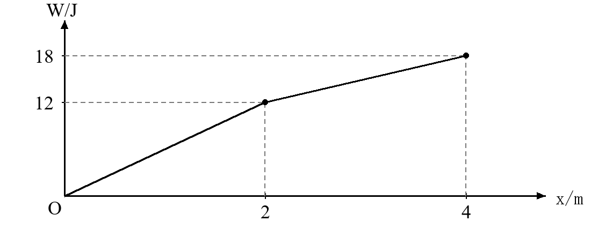
参考解答
摩擦力f=4N。前2m图线斜率为6N，拉力F1=6N。x=1m时动能为6−4=2J，速度2m/s，功率为12W，A错。
x=4m时动能18−4×4=2J，B对。前2m克服摩擦做功8J，C对。
后段拉力为3N<f，最大速度在x=2m处，动能4J，最大动量为22kg⋅m/s，D错。答案BC。
三 课堂练习
1． 质量为50kg的人站在电梯内。电梯由静止向上运动，上升3m时速度为2m/s。电梯本身的质量为500kg，忽略阻力，取g=10m/s2。
- （1）求电梯地板对人做的功。
- （2）把人与电梯作为整体，求钢索拉力做的功。
参考解答
对人，WN−mgH=21mv2，所以WN=1500+100=1600J。
对整体，WT−(M+m)gH=21(M+m)v2，所以WT=16500+1100=17600J。
2． 质量为2kg的物体以3m/s初速度沿直线运动，合外力图像如图。到达x=8m后，合外力继续保持−3N，直到物体第一次停止。
- （1）求物体停止时的位置。
- （2）说明为什么不能直接把三个力值作算术平均后乘总位移求功。
参考解答
x=8m处动能为23J。再运动Δx后，−3Δx=−23，所以x停=8+23/3=47/3m。
各力作用的位移不同，总功应按各段FiΔxi相加，不能用未加权的力平均值。
3． 物体由静止从倾角37∘的斜面上下滑5m，再经平滑连接处滑上水平面。两处动摩擦因数均为0.25。取g=10m/s2，sin37∘=0.6，cos37∘=0.8。
- （1）求坡底速度。
- （2）求水平面上的滑行距离。
参考解答
21mvB2=mg⋅5(0.6−0.25×0.8)=2mg，故vB=210m/s。
0.25mgs=21mvB2，得s=8m。两段摩擦力分别为0.2mg与0.25mg。
4． 质量为0.4kg的足球由地面静止状态被踢出。最高点离地5m，此时速度为6m/s。忽略空气阻力及踢球过程的高度变化，取g=10m/s2。
- （1）求踢球过程中人对球做的功。
- （2）求上升过程中重力做功及足球离脚速度。
参考解答
W人=0.4×10×5+21×0.4×62=27.2J。
WG=−20J，v0=62+2×10×5=234m/s。
5． 如图，物块质量0.5kg，从粗糙水平面上的A点由静止出发，受大小为4N的拉力。AB=1.75m。物块到B点后平滑进入光滑斜面，拉力方向随即改为沿斜面向上，大小不变；一段时间后撤去拉力。物块上升到C点速度为零，随后返回并恰好停在A点。已知BC=2m，斜面倾角37∘，取g=10m/s2，sin37∘=0.6。
- （1）求物块与水平面间的动摩擦因数。
- （2）求拉力在斜面上作用的距离与时间。
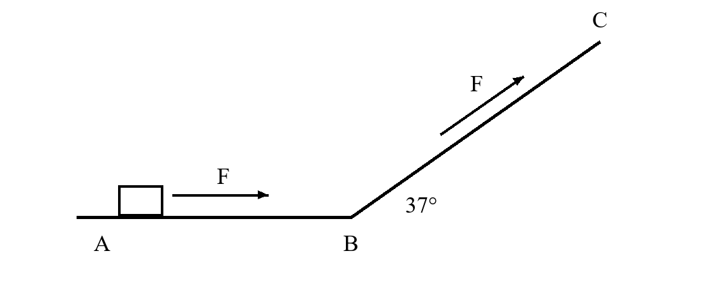
参考解答
返程从C到A，mg⋅BCsin37∘−μmg⋅AB=0，故μ=1.2/1.75=24/35。
从出发到最高点，设斜面上拉力作用距离为l。4(1.75+l)−μmg⋅1.75−mg⋅2⋅0.6=0，得l=1.25m。
去程水平段21mvB2=4×1.75−6=1J，故vB=2m/s。斜面上有拉力时a=(4−3)/0.5=2m/s2。
1.25=2t+21×2t2，取正根t=0.5s。利用返程先求摩擦系数，可减少去程的未知量。
四 课后练习
1． 物块质量2kg，沿水平面向右的初速度为2m/s。恒力F=10N斜向右上方，与水平方向夹角37∘。动摩擦因数0.25，物块向右移动4m。取g=10m/s2，sin37∘=0.6，cos37∘=0.8。
- （1）求拉力和摩擦力做的功。
- （2）求末速度。
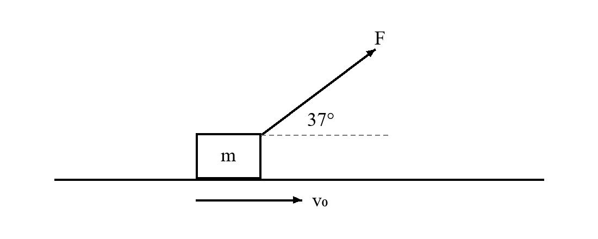
参考解答
N=mg−Fsin37∘=14N，f=3.5N。WF=10×4×0.8=32J，Wf=−14J。
初动能4J，末动能22J，故v=22m/s。倾斜拉力减小了支持力，不能令f=μmg。
2． 将质量为0.5kg的小球从地面以20m/s速度竖直上抛。忽略空气阻力，取g=10m/s2。
- （1）写出从抛出到落回地面过程中动能Ek关于时间t的表达式，并注明t的范围。
- （2）在所给坐标系中画出Ek与t的图像，标明顶点和两端点。
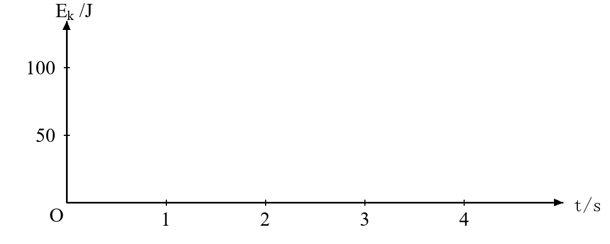
参考解答
v=20−10t，故Ek=21×0.5(20−10t)2=25(t−2)2J，0≤t≤4s。
图像为开口向上的抛物线段，经过(0,100)、(2,0)、(4,100)。上升和下降时速度方向相反，但动能都非负。
3． 质量为2kg的物体初速度改为5m/s，合外力与位移关系仍如图。
- （1）求x=8m处的动能和速度。
- （2）求前8m内的最大动能，并比较其位置与初速度为3m/s时是否相同。
参考解答
初动能25J，总功14J，所以Ek,8=39J，v8=39m/s。
到x=6m前总功20J，故最大动能45J。只要物体一直向右通过各段，最大值位置仍是x=6m。
4． 质量为2kg的物块在水平向右的拉力作用下，从静止开始在粗糙水平面上运动。其动能与位移图像由两条线段组成，如图。动摩擦因数为0.2，取g=10m/s2。
- （1）分别求前2m和后2m内的拉力。
- （2）求前4m内拉力做的总功及运动时间。
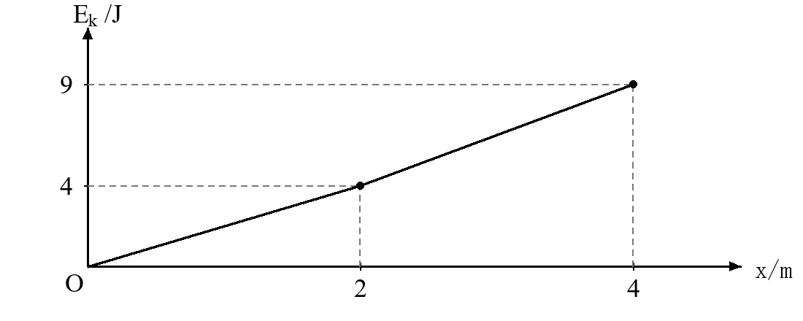
参考解答
摩擦力4N。两段合力为图线斜率2N和2.5N，故拉力分别为6N和6.5N。
拉力总功ΔEk+fx=9+16=25J。两段末速度分别为2m/s、3m/s。
加速度分别为1m/s2、1.25m/s2，故t=2/1+(3−2)/1.25=2.8s。
5． 质量为1kg的物块以4m/s初速度向右滑行，距轻弹簧左端1m。水平面动摩擦因数为0.2。物块使弹簧最多压缩0.5m后返回，取g=10m/s2。
- （1）求最大压缩时弹簧储存的弹性势能。
- （2）判断物块能否返回出发点；若能，求经过出发点时的速度。
参考解答
初动能8J，到最大压缩位置克服摩擦做功0.2×1×10×1.5=3J，故弹性势能为5J。
从最大压缩位置返回出发点还需克服摩擦做功3J，剩余动能2J>0，故能返回，速度为2m/s。
6． 半径为0.8m的竖直半圆形碗状轨道中，质量为0.2kg的小物块从边缘静止滑下。经过最低点时对轨道的压力为5N。取g=10m/s2。
- （1）求最低点的速度。
- （2）求下滑过程中克服摩擦力做的功。
参考解答
5−2=0.2v2/0.8，故v2=12，v=23m/s。
Wf+=mgR−21mv2=1.6−1.2=0.4J。
7． 光滑水平地面上放着质量2kg、长3m的木板。质量1kg的小物块位于木板左端，两者初始均静止。用6N水平恒力拉物块，滑动摩擦力为2N。
- （1）求物块滑到木板右端所用时间及木板的位移。
- （2）求两物体此时的总动能、产生的热量及拉力做功。
参考解答
物块加速度为(6−2)/1=4m/s2，板加速度2/2=1m/s2。相对位移3=21(4−1)t2，故t=2s。
木板位移x=21t2=1m，物块位移4m。两者动能分别为16J、2J，总动能18J。
热量Q=2×3=6J，拉力功W=6×4=24J=18+6。
8． 质量为1kg的物块在水平向右的拉力作用下，从静止开始运动，拉力做功与位移图像如图。物块与水平面间的动摩擦因数为0.2。到x=4m处撤去拉力，取g=10m/s2。
- （1）求x=4m处的速度。
- （2）求前4m内的最大速度及物块最终停止的位置。
参考解答
摩擦力为2N，Ek,4=18−2×4=10J，故v4=25m/s。
两段拉力分别6N、3N，都大于摩擦力，故前4m一直加速，最大速度为25m/s。
撤力后停止距离10/2=5m，最终位置x=9m。
9． 粗糙水平面AB长5m，与光滑竖直半圆轨道BCD相切连接，B为最低点，D为最高点，半径R=0.4m。质量1kg的小物块在9N水平恒力作用下从A点静止出发，到B点撤力。水平面动摩擦因数为0.1，取g=10m/s2。
- （1）求到达B点的速度。
- （2）求到达D点时轨道对物块的作用力大小，并检验物块能否保持接触。
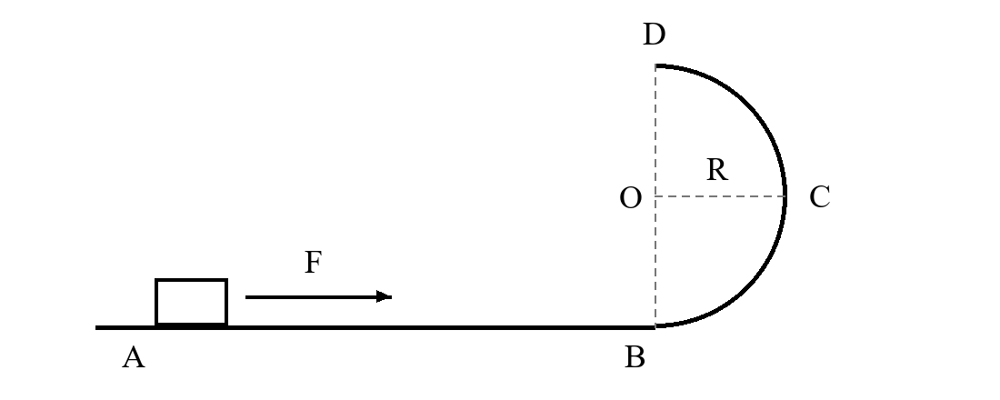
参考解答
(9−1)×5=21vB2，故vB=45m/s。
上升高度2R=0.8m，21vD2=40−8=32，所以vD=8m/s。
最高点N+mg=mvD2/R，得N=160−10=150N>0，可保持接触。
10． 如图，DO为水平线，AO竖直，AO=1.8m，DO=6m。物块可由D经B沿斜面BA上升，也可由D经C沿斜面CA上升。所有接触面的动摩擦因数均为0.2，各连接处能量损失可忽略。取g=10m/s2。
- （1）要恰好到达A点，两条路径所需的初速度是否相同？说明理由。
- （2）求该初速度。
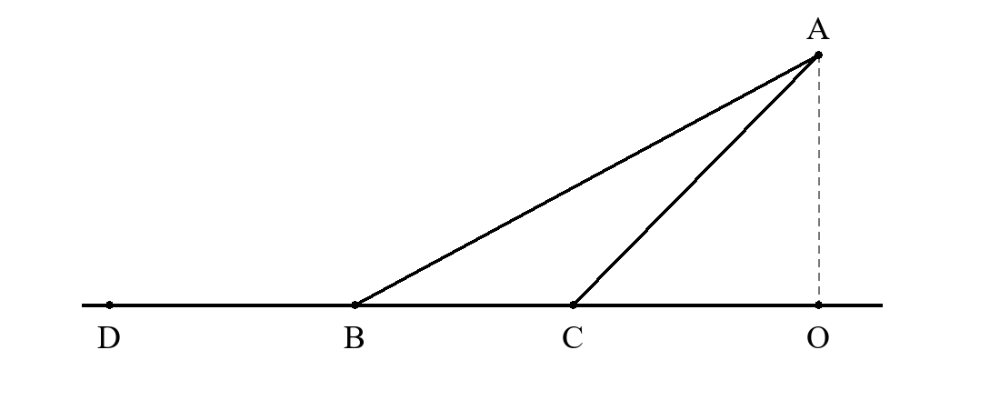
参考解答
对经B的路径，水平摩擦功为−μmgDB，斜面摩擦功为−μmgcosθBA=−μmgBO。总摩擦功为−μmgDO。经C同理。
两路径高度差和总摩擦功相同，所需初速度相同。21mv02=mgAO+μmgDO，得v0=60=215m/s。
函数概念与定义域
一 知识与公式
1．函数与对应关系
f:A→B；x↦f(x) 对定义域A中的每一个x，必须有且只有一个函数值。不同的x可以对应同一个值。判断两个函数相同，要同时比较定义域和对应关系。
2．常见定义域条件
u(x)1:u(x)=0；v(x):v(x)≥0 同一式子含多个部分时，各部分的限制同时成立。若根式在分母中，则被开方数应严格大于零。约分前的限制仍须保留。
3．复合函数的定义域
Df∘g={x∈Dg∣g(x)∈Df} 先求内层表达式允许的x，再要求它的输出落在外层函数的定义域中。题目中的x范围与f的输入范围要分清。
4．根式的参数条件
q(x)=ax2+bx+c(a>0)；qmin=c−4ab2 定义域为全体实数时，要求被开方数对所有实数非负。最高次项系数含参数时，先讨论它为零的情形，再讨论正负。
5．定义域与值域
Df=R⟺q(x)≥0 (∀x∈R) 对f(x)=q(x)，值域为[0,+∞)要求q能取到所有非负值。它允许q在某些位置为负，因此不能与“定义域为全体实数”混用。
6．分段与换元
t=g(x)；t∈g(D) 分段函数每次代入都按该次输入判断使用哪一段。换元求解析式时，必须同时写出新变量t的范围。
二 例题
例1 下列各组函数中，表示同一个函数的是（ ）。
- A．f(x)=x−1x2−1与g(x)=x+1
- B．f(x)=x2与g(x)=x
- C．f(x)=3x3与g(x)=x
- D．f(x)=(x)2与g(x)=x
参考解答
A约分后为x+1，但原定义域排除x=1；B的前一个函数为∣x∣；D的前一个函数只在x≥0有定义。
C中两个函数的定义域都为R，且3x3=x，故选C。
例2 在x≥0的范围内，用关系式y2=x确定x与y的对应关系。
- （1）该关系是否确定了y关于x的函数？说明理由。
- （2）若同时规定y≥0，写出函数解析式、定义域和值域。
参考解答
没有。例如x=1同时对应y=1和y=−1，函数值不唯一。
加入y≥0后得到y=x，定义域和值域均为[0,+∞)。限制输入范围与限制输出分支的作用不同。
例3 函数f(x)=x1+1−x的定义域为________________。
参考解答
分母不为零要求x=0，根式有意义要求x≤1。取交集得(−∞,0)∪(0,1]。
例4 求函数f(x)=x−22x−1+5−x1的定义域。
参考解答
三个条件同时成立，即2x−1≥0、x−2=0、5−x>0。
解得x≥21、x=2、x<5，故定义域为[21,2)∪(2,5)。分母中的根式要求严格大于零。
例5 已知函数y=f(x+1)的定义域为[1,2]。
- （1）求f(x)的定义域。
- （2）求y=f(3−x)及y=f(2x−1)的定义域。
参考解答
当x∈[1,2]时，x+1∈[2,3]，且线性内层能覆盖全部实数输入，因此Df=[2,3]。
2≤3−x≤3，得x∈[0,1]；2≤2x−1≤3，得x∈[23,2]。
例6 已知f(x)的定义域为[1,4]。
- （1）求g(x)=x−2f(x2−2x+2)的定义域。
- （2）求h(x)=f(x+1)的定义域。
参考解答
第一问要求1≤(x−1)2+1≤4且x=2。得到1−3≤x≤1+3，排除2，即[1−3,2)∪(2,1+3]。
第二问1≤x+1≤4，平方得1≤x+1≤16，所以定义域为[0,15]。此条件已保证内层根式有意义。
例7 若函数f(x)=ax2−ax+1的定义域为R，求实数a的取值范围。
参考解答
要求ax2−ax+1≥0对所有x成立。a=0时恒等于1，满足。a<0时，∣x∣充分大后为负，不满足。
a>0时，ax2−ax+1=a(x−21)2+1−4a，最小值非负要求a≤4。
综上a∈[0,4]。不能直接用判别式而漏掉a=0，也不能忽略抛物线开口方向。
例8 若函数f(x)=ax2−6x+a+8的值域为[0,+∞)，求实数a的取值范围。
参考解答
a<0时二次式有有限最大值，根式值域有上界，不满足。a=0时，被开方数为−6x+8，可以取遍[0,+∞)，满足。
a>0时二次式向上开口，必须取到0，其最小值应不大于0。有a+8−9/a≤0，即(a+9)(a−1)≤0。结合a>0得0<a≤1。
因此a∈[0,1]。若误把最小值要求为“恰等于0”，会漏掉二次式先取负值、但根式仍能取遍非负数的情形。
例9 已知函数f(x)={2−x2,x+x1−1,x≤1,x>1.
- （1）求f(f(21))。
- （2）若对任意x∈[a,b]，都有1≤f(x)≤3，求b−a的最大值。
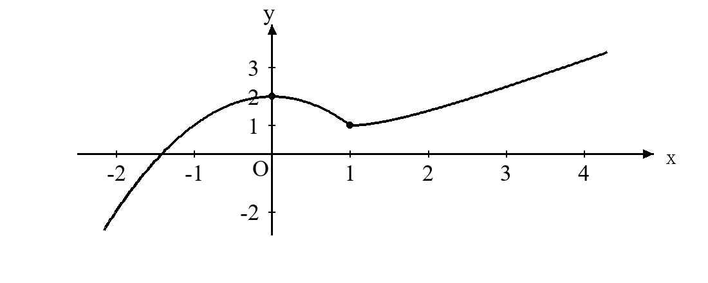
参考解答
f(21)=47>1，第二次代入使用第二段，f(47)=47+74−1=2837。
当x≤1时，1≤2−x2≤3等价于−1≤x≤1。当x>1时，x+1/x>2，只需x+1/x≤4。
因x>0，化为x2−4x+1≤0，结合x>1得1<x≤2+3。
全部满足条件的x构成[−1,2+3]，故最大区间长度为3+3。
例10 已知函数f(x)={2−x2,x+x1−1,x≤1,x>1.图像如图。
- （1）讨论实数t变化时，方程f(x)=t的不同实根个数。
- （2）求方程恰有三个不同实根时t的取值范围。
参考解答
左段顶点为(0,2)，在x=1取值1。右段在x>1严格递增，值域为(1,+∞)。
t<1时1根；t=1时2根；1<t<2时3根；t=2时2根；t>2时1根。
因此恰有三根的条件是1<t<2。两端t=1,2须单独计数，切点不能算两根。
例11 设f(x)=x+3，g(x)=(x+1)2，并用min{u,v}表示u,v中的较小者。令m(x)=min{f(x),g(x)}。两函数图像如图。
- （1）求m(x)的分段解析式，并在图中描出其图像。
- （2）求m(x)在[−3,1]上的值域。
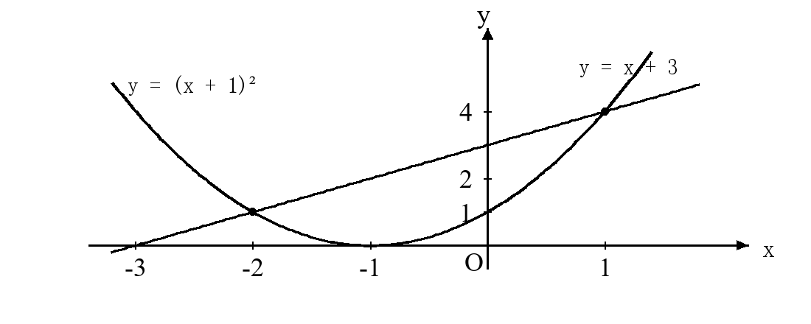
参考解答
比较(x+1)2−(x+3)=(x+2)(x−1)，在[−2,1]内二次式较小，在该区间外直线较小。
m(x)={x+3,(x+1)2,x<−2或x>1,−2≤x≤1.
在[−3,−2]上线段取值[0,1]；在[−2,1]上，抛物线最小值0、最大值4，故值域为[0,4]。
例12 对于任意x≥0，有f(x+1)=x−1，且f的定义域就是x+1的取值范围。
- （1）求f(t)及其定义域。
- （2）设g(x)=f(2−x)，求g(x)的解析式、定义域和值域。
参考解答
令t=x+1，则t≥1、x=(t−1)2，所以f(t)=t2−2t，t∈[1,+∞)。
要求2−x≥1，得x≤1。于是g(x)=(2−x)2−2(2−x)=x2−2x=(x−1)2−1。
在x≤1上，g最小值为−1，且无上界，值域为[−1,+∞)。换元后不可丢掉t≥1这一限制。
三 课堂练习
1． 设f(x)=x−2x2−4，g(x)=x+2。
- （1）判断两个函数是否相同。
- （2）分别求方程f(x)=4与g(x)=4的解集。
参考解答
Df=R∖{2}，Dg=R，所以不是同一函数。
f(x)=4化简得到x=2，但该值不在定义域中，故解集为空集。g(x)=4的解集为{2}。
2． 已知f(x)的定义域为[−1,3]。
- （1）求g(x)=4−x2f(2x−1)的定义域。
- （2）求h(x)=f(x2)的定义域。
参考解答
−1≤2x−1≤3给出0≤x≤2；分母要求−2<x<2。取交集为[0,2)。
−1≤x2≤3，由于x2≥0，故Dh=[−3,3]。
3． 若函数f(x)=x2−2ax+a+2的定义域为R，求a的取值范围，并写出两个边界值对应的函数。
参考解答
被开方数为(x−a)2+a+2−a2。最小值非负要求a+2−a2≥0，得−1≤a≤2。
a=−1时f(x)=∣x+1∣；a=2时f(x)=∣x−2∣，两者定义域均为R。
4． 已知f(x)={2−x2,x+x1−1,x≤1,x>1.求方程f(f(x))=1的全部实数解。
参考解答
先设u=f(x)，解f(u)=1。左段给u=±1；右段x>1的函数值严格大于1，没有新解。
再解f(x)=1得x=±1；解f(x)=−1得左段x=−3，右段无解。
因此解集为{−3,−1,1}。复合方程要逐层求原像，不能仅求f(x)=1。
5． 设f(x)=x+1，g(x)=(x−1)2，m(x)=min{f(x),g(x)}。
- （1）求m(x)的分段解析式，并在坐标系中画出图像。
- （2）求m(x)在[−1,3]上的值域。
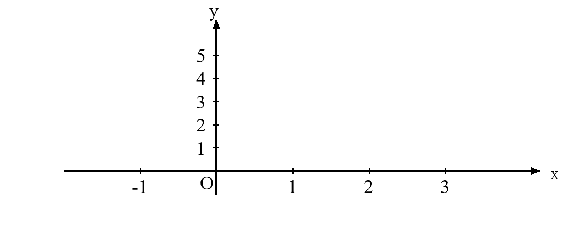
参考解答
(x−1)2−(x+1)=x(x−3)，所以m(x)=x+1在x<0或x>3时成立，在0≤x≤3时m(x)=(x−1)2。
在[−1,0]上值域为[0,1]；在[0,3]上值域为[0,4]。合并得[0,4]。
四 课后练习
1． 求函数f(x)=x2−13−x的定义域。说明x=3和x=1是否可以取到。
参考解答
要求x≤3且x=±1，故定义域为(−∞,−1)∪(−1,1)∪(1,3]。
x=3时分子为零、分母不为零，可以取到；x=1使分母为零，不能取到。
2． 已知y=f(2x−3)的定义域为[1,4]，求f(x)的定义域及h(x)=x+1f(1−x2)的定义域。
参考解答
线性内层2x−3取遍[−1,5]，所以Df=[−1,5]。
−1≤1−x2≤5得x2≤2，分母要求x>−1。因此Dh=(−1,2]。
3． 已知f(x)的定义域为[−2,4]。分别求y=f(2x+1−1)与y=f(x1)的定义域。
参考解答
第一式要求2x+1≥0，并且−2≤2x+1−1≤4。下界自动满足，上界给x≤12，故为[−21,12]。
第二式要求x=0且−2≤1/x≤4。分别在x>0与x<0上解，得(−∞,−21]∪[41,+∞)。
4． 若函数f(x)=ax2−2ax+3的定义域为R，求a的取值范围。
参考解答
a=0时成立；a<0时不成立。a>0时，被开方数为a(x−1)2+3−a，最小值非负要求a≤3。
因此a∈[0,3]。
5． 若函数f(x)=ax2−4x+a+3的值域为[0,+∞)，求a的取值范围。
参考解答
a=0时成立，a<0时根式值域有上界。a>0时要求二次式最小值a+3−4/a≤0。
等价于(a+4)(a−1)≤0，结合a>0得0<a≤1。因此a∈[0,1]。
6． 对于所有x≥0，有f(x−2)=x+1，且f的定义域就是x−2的取值范围。
- （1）求f(t)的解析式和定义域。
- （2）求f(0)及f在[−2,1]上的值域。
参考解答
令t=x−2，得t≥−2、x=(t+2)2，所以f(t)=(t+2)2+1，定义域[−2,+∞)。
f(0)=5。在[−2,1]上，0≤t+2≤3，故值域为[1,10]。
7． 函数f(x)=ax2−ax+1在区间[0,1]内每一点都有定义。求a的取值范围，并与“定义域为R”时的结论比较。
参考解答
在[0,1]上，x(x−1)∈[−41,0]。a≤0时，ax(x−1)+1≥1，均成立。
a>0时最小值为1−a/4，要求a≤4。所以本题a≤4。
要求整个实数域都有定义时，负a在远处会使被开方数为负，结论为[0,4]。自变量范围不同，参数约束也不同。
8． 设m(x)=min{x+3,(x+1)2}。
- （1）求方程m(x)=1的解集。
- （2）求不等式m(x)≤1的解集。
参考解答
在直线适用区间内无解；二次段解得x=−2,0，两者都在[−2,1]内，故解集为{−2,0}。
当x<−2时，m=x+3<1；在[−2,1]上要求(x+1)2≤1，得[−2,0]；x>1时无解。合并为(−∞,0]。
9． 已知f(x)={2−x2,x+x1−1,x≤1,x>1.方程f(x)=t有三个不同实根，且三根之和为2。求t及这三个实根。
参考解答
三根条件给1<t<2。左段两根为±2−t，和为零，所以右段根应为2。
t=f(2)=2+1/2−1=3/2。另两根为±1/2。三根为−22,22,2。
10． 设fa(x)=x−ax2−2ax+1。
- （1）若fa的定义域恰为R∖{a}，求a的取值范围。
- （2）当a=0时，求fa的值域。
参考解答
被开方数为(x−a)2+1−a2。若∣a∣≤1，对所有实数非负，分母只排除a，符合条件。
若∣a∣>1，在a附近除a以外仍有被开方数为负的点，不符合。因此a∈[−1,1]。
a=0时y=x2+1/x，有y2=1+1/x2>1，且y与x同号。任意∣y∣>1均可由x取到，值域为(−∞,−1)∪(1,+∞)。
函数单调性与奇偶性
一 知识与公式
1．单调性的定义
x1<x2⟹f(x1)<f(x2) 上式对区间内任意两个自变量都成立，才称严格递增。严格递减则把函数值的不等号反向。只比较几个点，或只与某个端点比较，不能代替定义。
2．作差证明
f(x2)−f(x1)=(x2−x1)A(x1,x2) 先设x1<x2，再判断剩余因子A的符号。含参数时，注意区间端点能否取到，以及两个自变量不能相等。
3．奇偶性
f(−x)=−f(x)奇函数；f(−x)=f(x)偶函数 先检查定义域关于原点对称。奇函数若在0处有定义，则f(0)=0。偶函数两侧对称区间的单调方向相反，奇函数两侧对称区间的单调方向相同。
4．平移后的对称性
f(c+t)=f(c−t)；f(c+t)+f(c−t)=2d 前式表示图像关于直线x=c对称，后式表示图像关于点(c,d)中心对称。遇到f(kx+b)，应把输入换成c+t与c−t再比较。
5．周期关系
f(x+T)=−f(x)⟹f(x+2T)=f(x) 先把题目的平移条件写成等式，再结合奇偶性推导。由此得到的周期不一定是最小正周期。
6．不等式与参数
f(u)>f(v)⟺u>v（同一递增区间内） 要同时保证u,v属于所用的区间。偶函数可先把输入改成绝对值；奇函数可把函数值前的负号移到输入中。
二 例题
例1 判断下列函数的奇偶性，并说明定义域起到的作用。
- （1）f(x)=x2，x∈[−1,2]。
- （2）g(x)=1+x2x，x∈R。
- （3）h(x)=0，x∈R∖{0}。
参考解答
f的定义域不关于原点对称，例如2在定义域内而−2不在，故非奇非偶。
g的定义域为R，g(−x)=−g(x)，所以是奇函数。
h的定义域对称，并且h(−x)=h(x)=−h(x)=0，所以同时为奇函数与偶函数。
例2 函数f定义在[0,+∞)上，且对任意x>0，均有f(x)<f(0)。能否据此断定f在[0,+∞)上严格递减？若不能，请给出反例并检验。
参考解答
不能。取f(x)=−x/(1+x2)，有f(0)=0，所有x>0都有f(x)<0，满足条件。
但f(1)=−1/2<f(2)=−2/5，而1<2，违反严格递减的要求。条件只说明f(0)大于其余函数值。
例3 函数f(x)=3x−(31)x的性质为（ ）。
- A．奇函数，且在全体实数上递增
- B．偶函数，且在全体实数上递增
- C．奇函数，且在全体实数上递减
- D．偶函数，且在全体实数上递减
参考解答
f(−x)=3−x−3x=−f(x)，且定义域为R，故为奇函数。
当x2>x1时，3x2>3x1，且−3−x2>−3−x1，两式相加得f(x2)>f(x1)，故选A。
例4 已知f(x)=x+x1，x>0。
- （1）用定义证明f在(0,1]上严格递减，在[1,+∞)上严格递增。
- （2）若3m和5−2m均大于1，且f(3m)>f(5−2m)，求m的取值范围。
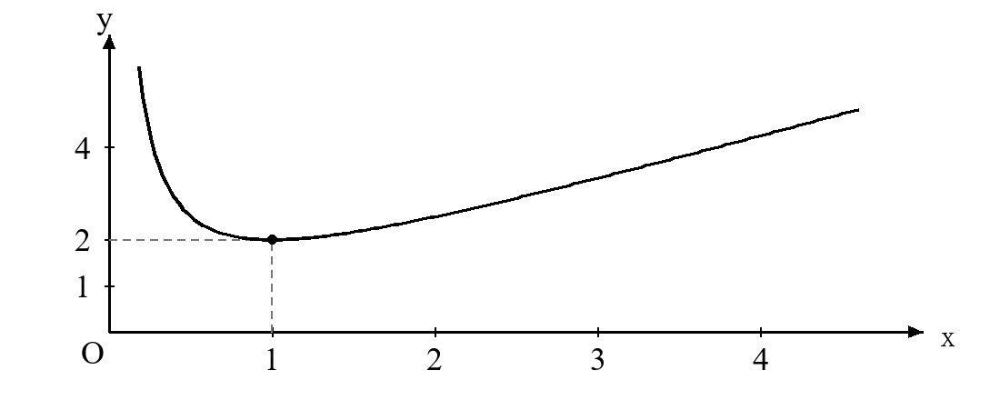
参考解答
设x1<x2，作差f(x2)−f(x1)=(x2−x1)(1−1/(x1x2))。在(0,1]上有x1x2<1，差为负；在[1,+∞)上有x1x2>1，差为正。
两输入在同一递增区间内，所以3m>5−2m。还需3m>1、5−2m>1，合并得1<m<2。
例5 偶函数f的定义域为[−3,3]，在[0,3]上严格递增。求不等式f(2x−1)<f(x+1)的解集。
参考解答
首先−3≤2x−1≤3且−3≤x+1≤3，给出−1≤x≤2。
利用偶性，不等式等价于f(∣2x−1∣)<f(∣x+1∣)。在非负区间递增，故∣2x−1∣<∣x+1∣。
平方后得3x(x−2)<0，解为0<x<2，与输入限制相交仍为(0,2)。
例6 定义在R上的函数f满足f(x+1)是偶函数。
- （1）求y=f(x)与y=f(2x)图像的对称轴。
- （2）若f(−1)=4，求f(3)。
参考解答
f(1+t)=f(1−t)，所以f的对称轴为x=1。令2x关于1对称，得f(2x)的对称轴为x=1/2。
−1与3关于1对称，因此f(3)=f(−1)=4。
例7 定义在R上的函数f满足f(3x−1)+2是奇函数。
- （1）求y=f(x)图像的对称中心。
- （2）若f(2)=5，求f(−4)。
参考解答
奇性给f(3x−1)+f(−3x−1)=−4。两个输入关于−1对称，函数值和为−4，因此对称中心为(−1,−2)。
2与−4关于−1对称，所以f(2)+f(−4)=−4，得f(−4)=−9。
例8 函数f定义在R上，f(x+2)为偶函数，f(2x+1)为奇函数。
- （1）证明f(−1)=0。
- （2）证明f(x+2)=−f(x)，进而说明f(x+4)=f(x)。
参考解答
f(x+2)为偶函数给f(4−t)=f(t)；f(2x+1)为奇函数给f(2−t)=−f(t)。代t=1得f(1)=0。
由轴对称得f(3)=f(1)=0，再由中心对称得f(−1)=−f(3)=0。
f(t+2)=f(2−t)=−f(t)。再平移一次，f(t+4)=−f(t+2)=f(t)。只说明4是周期，不断言最小正周期为4。
例9 奇函数f定义在R上，且当x>0时，f(x)=x2−2x。
- （1）写出f在整个实数域上的分段解析式。
- （2）求f的单调区间及不等式f(x)≥0的解集。
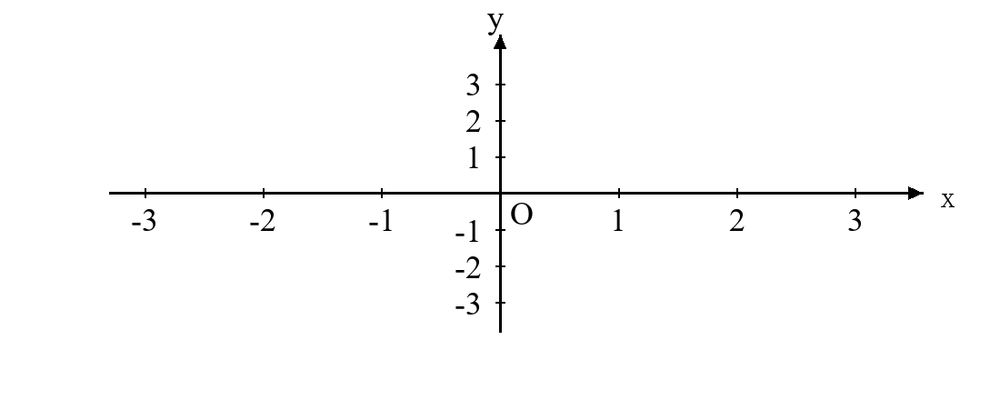
参考解答
当x<0时，−x>0，f(x)=−f(−x)=−x2−2x；且f(0)=0。
f(x)=⎩⎨⎧−x2−2x,0,x2−2x,x<0,x=0,x>0.
递增区间为(−∞,−1]与[1,+∞)，递减区间为[−1,1]。两侧在0衔接，函数值也符合递减方向。
负半轴解得[−2,0)，加上0及正半轴[2,+∞)，解集为[−2,0]∪[2,+∞)。
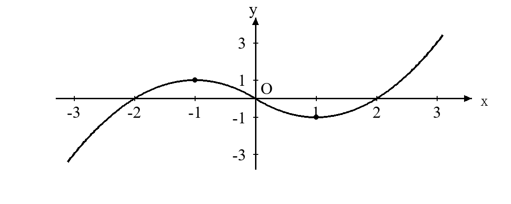
例10 已知a>0，函数f(x)=x2+1−ax在[1,+∞)上严格递增。求a的取值范围，要求用作差法说明充分性与必要性。
参考解答
取1≤x1<x2，则f(x2)−f(x1)=(x2−x1)(x12+1+x22+1x1+x2−a)。
当x≥1时x2+1≤2x，且x2>1处为严格不等式。因此括号内的分式严格大于1/2。若0<a≤1/2，作差恒正。
若a>1/2，取x1=1、x2=1+h，其中0<h<22a−2。分式小于(2+h)/(22)<a，于是作差为负，矛盾。
故0<a≤22。边界值仍严格递增，不能因为下界等于参数就排除。
例11 已知f(x)=x2+2∣x−a∣。
- （1）若f为偶函数，求a。
- （2）当a>0时，若g(x)=xf(x)在(0,a]上严格递减，求a的取值范围。
参考解答
若f为偶函数，则f(a)=f(−a)。两边分别为a2与a2+4∣a∣，故a=0；代回f=x2+2∣x∣，确为偶函数。
在0<x≤a上，g(x)=x+2a/x−2。取0<x1<x2≤a，有g(x2)−g(x1)=(x2−x1)(1−2a/(x1x2))。
若0<a≤2，则x1x2<a2≤2a，作差恒负。若a>2，取x1=(a+2)/2、x2=a，则x1>2，作差为正，矛盾。
所以第二问0<a≤2。取两个不同自变量时乘积严格小于a2，因此a=2可以取到。
例12 奇函数f定义在R上，满足f(x−4)=−f(x)，且在[0,2]上严格递增。方程f(x)=m，其中m>0，在[−8,8]内恰有四个不同实根。
- （1）证明f(x+8)=f(x)，并说明m与f(2)的大小关系。
- （2）求这四个根的和。
参考解答
由平移条件得f(x+4)=−f(x)，再用一次得f(x+8)=f(x)。奇性给f(0)=0，且f(4−x)=f(x)。
在[0,4]上先增后减，峰值f(2)>0，在[4,8]上函数值非正。因此四根条件要求0<m<f(2)。
设在(0,2)内的唯一根为r。利用关于x=2对称及周期8，四根为r−8,−4−r,r,4−r。
根的和为−8。若m=f(2)，两个交点合并成峰顶，每个正值区间只有一个根，不能仍按四根计算。
三 课堂练习
1． 设f(x)=2x−2−x。
- （1）判断奇偶性，并说明在实数域上的单调性。
- （2）解不等式f(2x−1)+f(x−2)>0。
参考解答
f(−x)=−f(x)，所以是奇函数；两项2x和−2−x均递增，所以f严格递增。
利用奇性，f(2x−1)>−f(x−2)=f(2−x)。递增性给2x−1>2−x，故解集为(1,+∞)。
2． 设f(x)=x+x4，x>0。
- （1）用定义求单调区间。
- （2）若a+1与5−a均属于[2,+∞)，且f(a+1)≤f(5−a)，求a的范围。
参考解答
作差为(x2−x1)(1−4/(x1x2))，因此在(0,2]严格递减，在[2,+∞)严格递增。
输入限制为1≤a≤3，函数不等式等价于a+1≤5−a，即a≤2。综上a∈[1,2]。
3． 函数f定义在R上，f(x−1)+2为奇函数，f(x+2)为偶函数，且f(0)=1。
- （1）求f(6)和f(12)。
- （2）证明f(x+12)=f(x)。
参考解答
条件给f(−2−t)+f(t)=−4，以及f(4−t)=f(t)。因此f(t+6)=f(−2−t)=−4−f(t)。
f(6)=−4−f(0)=−5，f(12)=−4−f(6)=1。再平移一次即得f(t+12)=f(t)。
非零中心要求保留常数−4，不能直接套用f(t+6)=−f(t)。
4． 已知f(x)=x2+2∣x−1∣。
- （1）写出分段解析式，求单调区间与最小值。
- （2）求方程f(x)=2的所有实数解，并在坐标系中作图检验。
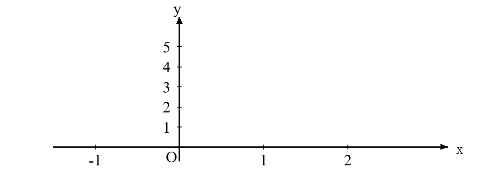
参考解答
f(x)={(x−1)2+1,(x+1)2−3,x≤1,x>1.在(−∞,1]递减，在[1,+∞)递增，最小值为1。
左段方程给x=0或2，只有0属于该段；右段给x=−1±5，只有−1+5>1成立。解集为{0,−1+5}。
5． 函数f定义在R上。关于x的方程f(2008+x)f(a−x)=0恰有2009个不同实根，所有根的和为2009。
- （1）证明若r是一个根，则a−2008−r也是一个根。
- （2）求实数a。
参考解答
把x换成a−2008−x后，两因子的输入恰好交换，方程保持不变。因此根集关于(a−2008)/2对称。
有限根集关于中心c对称，则根的平均值为c。本题c=2009/2009=1，所以(a−2008)/2=1，得a=2010。
奇数个不同实根中，未成对的那个根正好位于中心；不需要知道f的具体解析式。
四 课后练习
1． 分别判断下列函数的奇偶性，写出判断依据。
- （1）f(x)=x−1x2−1。
- （2）g(x)=x∣x∣。
- （3）h(x)=4−x2。
参考解答
f的定义域为R∖{1}，不对称，因此非奇非偶。
g的定义域为R∖{0}，且g(−x)=−g(x)，为奇函数。
h的定义域为[−2,2]，且h(−x)=h(x)，为偶函数。
2． 函数f(x)=−1+x2x定义在[0,+∞)上。
- （1）证明任意x>0都有f(x)<f(0)。
- （2）用作差法求单调区间，解释上述性质为什么不能说明f一直递减。
参考解答
f(0)=0，而x>0时分子为负、分母为正，故f(x)<0。
f(x2)−f(x1)=(1+x12)(1+x22)(x2−x1)(x1x2−1)。
在[0,1]上严格递减，在[1,+∞)上严格递增。它始终低于端点值，但函数值可以先降后升。
3． 奇函数f定义在[−2,2]上，且严格递增。解不等式f(x−1)+f(2x+1)≥0。
参考解答
两个输入有定义要求−1≤x≤1/2。由奇性，原式等价于f(x−1)≥f(−2x−1)。
递增性给x−1≥−2x−1，即x≥0。与输入范围相交，得[0,1/2]。
4． 偶函数f定义在[−4,4]上，在[0,4]上严格递减。解不等式f(2x−1)≥f(x+2)。
参考解答
输入条件给x∈[−3/2,2]。用偶性化为绝对值输入，再由递减性得∣2x−1∣≤∣x+2∣。
平方后得3x2−8x−3≤0，所以−1/3≤x≤3。与定义域条件相交为[−1/3,2]。
5． 函数f定义在R上，满足f(2x+3)−1为奇函数，f(x−2)为偶函数，且f(4)=5。
- （1）求f图像的对称中心及f(2)。
- （2）求f(14)、f(24)，并说明所用的平移关系。
参考解答
中心为(3,1)，故f(2)+f(4)=2，所以f(2)=−3。偶性条件给对称轴x=−2。
中心对称为f(6−t)=2−f(t)，轴对称为f(−4−t)=f(t)。合成得f(t+10)=2−f(t)，再合成得f(t+20)=f(t)。
因此f(14)=2−f(4)=−3，f(24)=f(4)=5。
6． 已知a>0，f(x)=x+xa在[2,+∞)上严格递增。用定义求a的取值范围，并检查边界值。
参考解答
f(x2)−f(x1)=(x2−x1)(1−a/(x1x2))。当2≤x1<x2时，x1x2>4，所以0<a≤4均使差为正。
若a>4，取x1=2、x2=1+a/4，则2<x2<a/2，有x1x2<a，作差为负，矛盾。
因此a∈(0,4]。a=4时依然严格递增。
7． 已知a>0，函数f(x)=x2+4−ax在[1,+∞)上严格递增。用作差法求a的取值范围。
参考解答
作差中的分式为x12+4+x22+4x1+x2。在1≤x1<x2时，利用x2+4≤5x，知该分式严格大于1/5。
所以0<a≤1/5充分。若a>1/5，取x1=1、x2=1+h，且0<h<25a−2，该分式小于(2+h)/(25)<a，与递增矛盾。
故a∈(0,5/5]。
8． 设c>0，f(x)=x2+c∣x−a∣。
- （1）若f是偶函数，求a。
- （2）当a>0时，求使g(x)=f(x)/x在(0,a]上严格递减的a,c关系。
参考解答
f(−a)−f(a)=2c∣a∣，因c>0，偶性迫使a=0；代回也成立。
在该区间g=x+ca/x−c，作差为(x2−x1)(1−ca/(x1x2))。当0<a≤c时，x1x2<a2≤ca，差恒负。
若a>c，取x1=(a+c)/2、x2=a，有x1>c，差为正。因此所求关系为0<a≤c。
9． 奇函数f定义在R上，满足f(x−3)=−f(x)，且在[0,23]上严格递增。设m>0，方程f(x)=m在[−6,6]内有四个不同实根。
- （1）求这四个根的和。
- （2）求f(x)=0在[−6,6]内的全部实根。
参考解答
函数满足f(x+6)=f(x)，且f(3−x)=f(x)。设第一正根r∈(0,3/2)，四根为r−6,−3−r,r,3−r，和为−6。
f(0)=0，在(0,3)函数值为正，在(3,6)函数值为负。结合周期与奇性，零点为−6,−3,0,3,6。
10． 设m(x)=min{x+3,(x+1)2}。
- （1）求单调区间。
- （2）已知a≥−1。若m在[a,a+1]上的最大值与最小值之差为1，求a。
参考解答
比较两式得交点x=−2,1。函数在(−∞,−2]递增，在[−2,−1]递减，在[−1,+∞)递增。
因a≥−1，极差为m(a+1)−m(a)。当−1≤a≤0时，极差为(a+2)2−(a+1)2=2a+3，等于1给a=−1。
当0<a<1时，极差为a+4−(a+1)2=3−a−a2，等于1的根为1,−2，均不在该开区间。
当a≥1时，两端在直线段上，极差恒为1。所以a∈{−1}∪[1,+∞)。